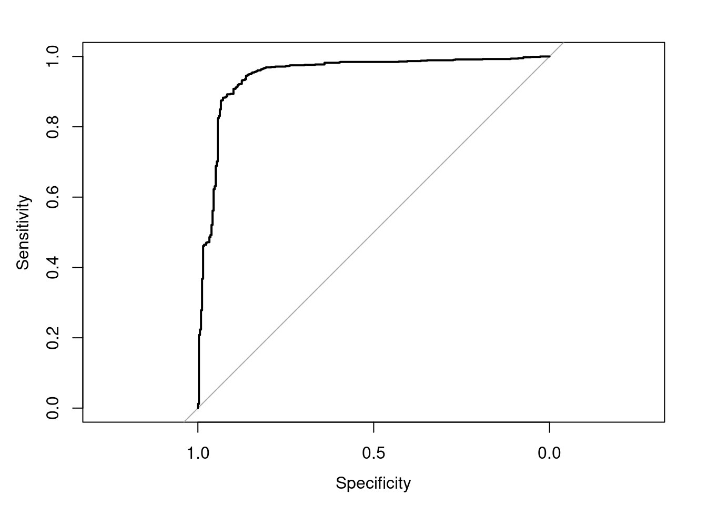
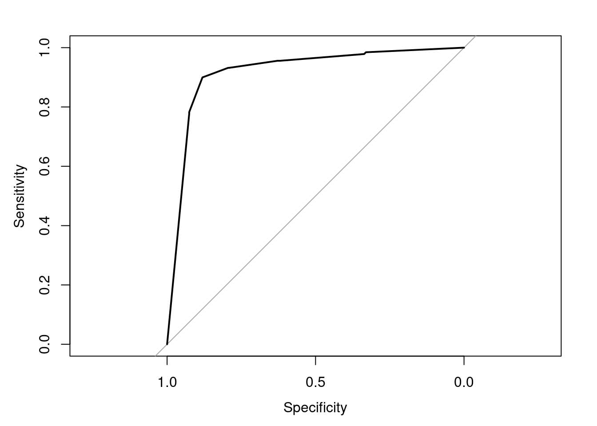
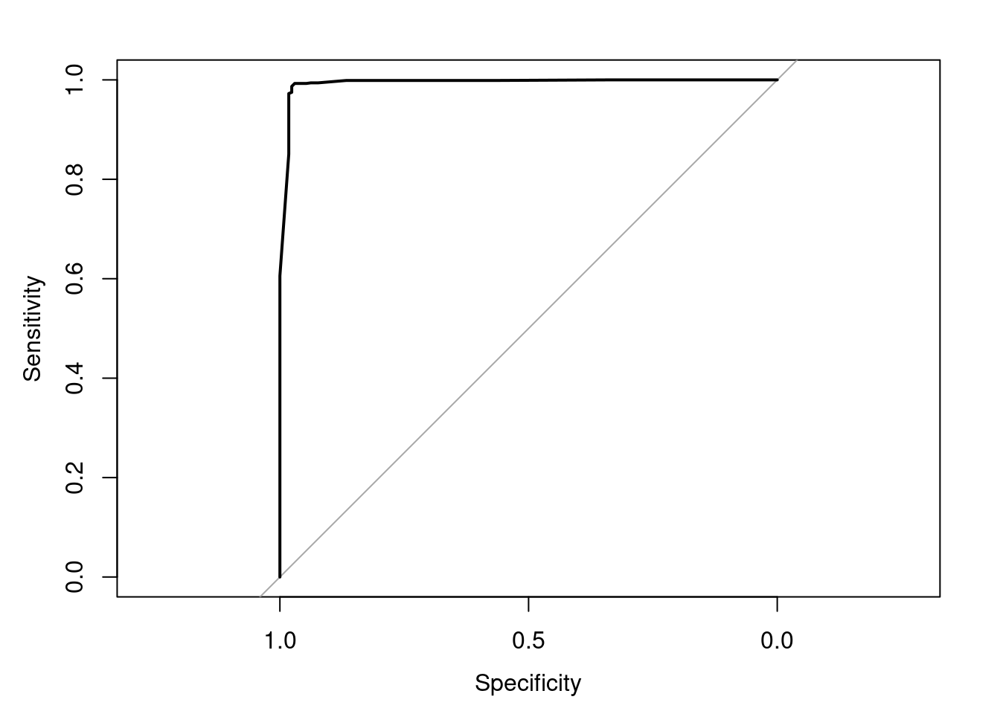

6 Curva de ROC
Las curvas ROC (Receiver Operating Characteritic curve) permiten evaluar, en problemas de clasificación binaria, cómo varia la proporción de verdaderos positivos (sensibilidad o recall) y la de falsos positivos (1-especificidad) dependiendo del cutoff de probabilidad empleado en las asignaciones. El gráfico resultante es muy útil para identificar el cutoff que consigue un mejor equilibrio sensibilidad-especificidad. Además de esto, la curva ROC, en concreto el área bajo la curva (AUC), puede emplearse como métrica para evaluar modelos. Un modelo que clasifica perfectamente las dos clases tiene un 100% de sensibilidad y especificidad, por lo que el área bajo la curva es de 1. Un modelo que predice por debajo de lo esperado por azar, tiene un AUC menor de 0.5. Una condición necesaria para crear una curva ROC es disponer de la probabilidad de clases en las predicciones.
En caret, se puede sustituir la métrica accuracy empleada por defecto en problemas de clasificación y calcular en su lugar el AUC. Para ello, se tienen que indicar los argumentos summaryFunction = twoClassSummary y classProbs = TRUE en el control de entrenamiento. El segundo argumento es necesario porque el cálculo de la curva ROC requiere las probabilidades predichas para cada clase. Además del área bajo la curva, se calcula la sensibilidad y la especificidad para un cutoff de 0.5.
El paquete pROC contiene múltiples funciones para crear, representar y obtener métricas a partir de curvas ROC. Como argumentos se necesitan únicamente las probabilidades predichas para cada clase y la clase verdadera a la que pertenece cada observación.
# Se obtienen las probabilidades predichas para cada clase
predicciones <- predict(object = modelo_logistic,
newdata = dataTest[,c(2:10,13,14,15)],
type = "prob")
# Cálculo de la curva
curva_roc <- roc(response = dataTest$Gama,
predictor = predicciones$Alta)
# Gráfico de la curva
plot(curva_roc)
# Área bajo la curva AUC
auc(curva_roc)## Area under the curve: 0.9471# Intervalo de confianza de la curva
ci.auc(curva_roc, conf.level = 0.95)## 95% CI: 0.9314-0.9629 (DeLong)Con la regresión logística se consigue un área bajo la curva del 94%.
Ahora, veamos la curva ROC para el modelo k-nn.
# Se obtienen las probabilidades predichas para cada clase
predicciones <- predict(object = modelo_knn,
newdata = dataTest[,c(2:10,13,14,15)],
type = "prob")
# Cálculo de la curva
curva_roc <- roc(response = dataTest$Gama,
predictor = predicciones$Alta)
# Gráfico de la curva
plot(curva_roc)
# Área bajo la curva AUC
auc(curva_roc)## Area under the curve: 0.9184# Intervalo de confianza de la curva
ci.auc(curva_roc, conf.level = 0.95)## 95% CI: 0.8995-0.9372 (DeLong)Ahora, para el modelo de árbol de decisión:
# Se obtienen las probabilidades predichas para cada clase
predicciones <- predict(object = modelo_C50Tree,
newdata = dataTest[,c(2:10,13,14,15)],
type = "prob")
# Cálculo de la curva
curva_roc <- roc(response = dataTest$Gama,
predictor = predicciones$Alta)
# Gráfico de la curva
plot(curva_roc)
# Área bajo la curva AUC
auc(curva_roc)## Area under the curve: 0.9939# Intervalo de confianza de la curva
ci.auc(curva_roc, conf.level = 0.95)## 95% CI: 0.9898-0.998 (DeLong)El área bajo la curva del árbol de decisión es de 99%, por lo que se realiza un buen diagnóstico con este modelo.